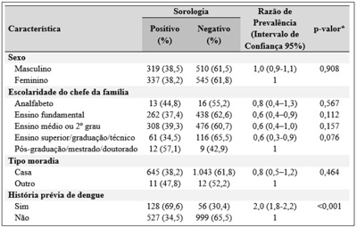
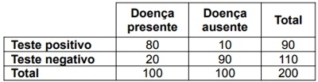

Questão 1 · Tetralogia de Fallot · Pediatria · 4000166907Nas radiografias de tórax, a vascularização pulmonar estará diminuída na seguinte enfermidade:
A síndrome de Lutembacher.
B tetralogia de Fallot.
C complexo de Eisenmenger.
D síndrome de Kartagener.
Questão 2 · Imunodef iciências primárias · Pediatria · 4000166906A doença granulomatosa crônica da infância é uma imunode ciência hereditária, geralmente ligada ao cromossoma X. As crianças frequentemente podem ser infectadas por fungos. Dentre esses, o mais comum é:
A candida albicans.
B aspergilus fumigatus.
C torulepsis glabrata.
D criptococos neoformans.
Questão 3 · Queimaduras e Trauma Elétrico · Atendimento Inicial às Vítimas de Queimadura · Cirurgia · 4000166905Em relação a queimaduras extensas na faixa etária pediátrica, deve-se
A levar a criança imediatamente a um pronto-socorro antes de qualquer procedimento.
B pressionar firme sobre a área acometida para aliviar a dor.
C fazer o resfriamento da área lesada debaixo de água corrente fria por vários minutos é a primeira conduta, se possível.
D evitar o uso de analgésicos antes da avaliação médica é muito importante, para não mascarar o quadro.
Questão 4 · Tratamento · 4000166904Recém-nascidos com diagnóstico confirmado de toxoplasmose congênita devem receber qual tratamento?
A Oxacilina + cefalexina + cefazolina.
B Rifampicina + isoniazida + pirazinamida.
C Amoxicilina + claritromicina + omeprazol.
D Sulfadiazina + pirimetamina + ácido folínico.
Questão 5 · Tratamento Geral · Pediatria · 4000166903Criança de quatro anos com diagnóstico de pneumonia adquirida na comunidade (PAC) deve receber como primeira opção de tratamento ambulatorial:
A Eritromicina por sete dias.
B Claritromicina por dez dias.
C Amoxicilina por sete dias.
D Azitromicina por cinco dias.
Questão 6 · Tratamento de Manutenção · Pediatria · 4000166902Qual é o tratamento de primeira linha e o mais efetivo para crianças com asma persistente?
A Corticosteroides inalados.
B Antagonistas dos receptores.
C Macrolídeos.
D Beta 2-agonistas de longa duração.
Questão 7 · Vacinas vivas atenuadas · 4000166901Atualmente já existe uma vacina contra a dengue, autorizada no mundo e já inclusa em nosso calendário vacinal. Porém, ela só pode ser administrada em pessoas que sejam soropositivas para dengue e a partir de
A seis anos.
B nove anos.
C doze anos.
D dezoito anos.
Questão 8 · Ascaridíase · 4000166900Qual é a doença cujo helminto é o mais prevalente no mundo e o de maior letalidade no Brasil, podendo acometer fígado e pulmões na sua forma larvária e na forma adulta atua no intestino?
A Ancilostomíase.
B Ascaridíase.
C Estrongiloidíase.
D Giardíase.
Questão 9 · Tratamento · 4000166899Qual é o tratamento de primeira linha para teníase?
A Mebendazol.
B Albendazol.
C Praziquantel.
D Ivermectina.
Questão 10 · Exame f ísico do Recémnascido · Recepção do neonato com boa vitalidade · 4000166898Em relação aos cuidados com os recém-nascidos, sabe-se que:
A deve-se evitar a exposição direta ao sol.
B é preferível o uso do lenço umedecido do que a água da torneira.
C o vérnix caseoso deve ser retirado com água corrente logo após o nascimento.
D o primeiro banho, idealmente, deve ser dado nas primeiras 24 horas de vida.
Questão 11 · Prof ilaxias Ferro Vitaminas D e A · Pediatria · 4000166897Em relação à vitamina D sabe-se que:
A a exposição solar é sua principal fonte e corresponde a 60% da vitamina no organismo.
B a Sociedade Brasileira de Pediatria recomenda a suplementação nos primeiros dois anos de vida.
C os lactentes encontram nos alimentos a sua principal fonte para suprir as suas necessidades.
D os recém-nascidos que estão em aleitamento materno exclusivo não necessitam de nenhum tipo de suplementação.
Questão 12 · Pediatria · Alimentação Inf antil · 4000166896Toda criança precisa de alimentação saudável e balanceada para um desenvolvimento e crescimento adequados. Uma das ferramentas utilizadas nesta orientação é a pirâmide alimentar, que é composta de quatro níveis de grupos alimentares. Com base nisso, as crianças escolares e pré-escolares
A podem ingerir frutas e verduras, sem restrições.
B devem ingerir a quantidade de leite e derivados em menor quantidade do que a de frutas e verduras.
C devem ingerir em maior quantidade cereais, pães, tubérculos e raízes.
Revisar: só 3 alternativas
Questão 13 · Vitamina B12Cianocobalamina · Pediatria · 4000166895Criança, lha de pais vegetarianos estritos, é levada ao pediatra com quadro de irritabilidade, glossite, diarreia e sinais de parestesias. Ela apresenta deficiência de vitamina:
A A.
B B1.
C B12.
D C.
Questão 14 · Pediatria · Def iciência · 4000166894A faixa etária de maior risco para hipovitaminose A é:
A recém-nascidos.
B lactentes.
C pré-escolares.
D adolescentes.
Questão 15 · Idade gestacional · 4000166893Na classificação do recém-nascido conforme a idade gestacional, sabe-se que:
A prematuridade extrema corresponde a recém-nascidos menores de 28 semanas.
B prematuridade tardia corresponde a recém-nascidos de 35 a 36 semanas.
C prematuridade corresponde a recém-nascidos de até 37 semanas.
D pós-termo corresponde a recém-nascidos maiores do que 42 semanas.
Questão 16 · Pediatria · Orientações gerais de puericultura Sinais de alerta · 4000166892Toda criança precisa dormir bem para ter um desenvolvimento adequado. A distribuição de horas de sono, de acordo com a idade, deve ser:
A crianças de três meses devem dormir de seis a nove horas à noite e fazer duas sonecas durante o dia.
B crianças de um ano devem dormir de nove a dez horas à noite e fazer de três a quatro sonecas durante o dia.
C crianças de quatro anos devem dormir de onze a doze horas à noite e não fazer sonecas durante o dia.
D todas as crianças de seis anos devem dormir de oito a dez horas e não fazer sonecas durante o dia.
Questão 17 · Asf ixia perinatal · 4000166891É um dos dez passos básicos no atendimento ao RN com asfixia perinatal:
A Controlar a temperatura durante a reanimação, a cada cinco minutos, já induzindo o RN à hipotermia terapêutica.
B Oferecer uma taxa hídrica inicial entre 80 e 100 ml/ kg/dia.
C Manter saturação de oxigênio maior do que 95% com gasometria arterial normal.
D Controlar eletrólitos, hemoglobina, hematócrito, coagulograma e plaquetas a cada 12 horas no primeiro dia de vida.
Questão 18 · COVID 19 · Pediatria · 4000166890É critério de admissão em UTI pediátrica toda criança com Covid-19 que apresente:
A hipoxemia com saturação de oxigênio (SO2) menor do que 95%.
B desconforto respiratório leve, moderado ou grave.
C necessidade de uso de drogas vasoativas.
D sinais de disfunções orgânicas moderadas ou graves.
Questão 19 · Atualizações · COVID 19 · Vacinas · 4000166889De acordo com a nota técnica 36/2021, de 02 de setembro de 2021, o Ministério da Saúde (MS) do Brasil autorizou a vacinação de adolescentes de 12 a 17 anos contra a Covid-19. Qual a única vacina que até a referida data está autorizada a ser aplicada nessa faixa etária?
A Coronavac.
B Jansen.
C Astrazeneca.
D Pfizer.
Questão 20 · Exame de urina · 4000166888Qual é o exame padrão-ouro para fazer diagnóstico de ITU?
A Hemocultura.
B US de rins e vias urinárias.
C Uretrocistografia miccional.
D Urocultura.
Questão 21 · Obstetrícia · Eclâmpsia · 4000166887Uma mulher de 35 anos de idade, primigesta, está no sétimo mês de uma gravidez sem intercorrências quando surgem dores de cabeça que vão piorando, acompanhado de ganho de 3 kg em uma semana. Nessa manhã, ela teve uma crise convulsiva generalizada. No exame físico, ela está afebril, mas sua pressão arterial é de 190/110 mmHg (era de 120/80 mmHg na consulta de pré-natal, um mês antes). Ela apresenta edema envolvendo a cabeça e todas as extremidades. Os batimentos cardíacos fetais são de 140/min e há presença de movimentos fetais. As análises laboratoriais indicam hemoglobina de 12,5 g/ dL; hematócrito de 37,6%; VCM de 92 mm³; contagem de plaquetas de 199.000/mm³; creatinina sérica de 1 mg/dL; potássio de 4,2 mmol/L; e glicemia de 101 mg/dL. A análise da urina aponta 21 de proteinúria, mas sem hematúria, leucócitos ou cilindros. Nesse caso, qual dos seguintes fatores subjacentes mais provavelmente foi o causador da doença da paciente?
A Doença trofoblástica gestacional.
B Hiperplasia cortical da suprarrenal.
C Isquemia da placenta.
D Neoplasia ovariana produtora de estrogênio.
Questão 22 · Ginecologia · Classif icação histológica · 4000166886Uma mulher de 65 anos de idade tem apresentado aumento do volume abdominal há seis meses. No exame físico, há distensão abdominal com onda de líquidos. A ultrassonogra a pélvica revela a presença de massa ovariana cística de 10 cm à direita. A massa é removida cirurgicamente. Ao exame macroscópico, a massa removida é um cisto unilocular repleto de líquido claro, e as projeções papilares se estendem à luz central do cisto. O exame microscópico mostra que as papilas são cobertas por células cuboides atípicas que invadem o estroma subjacente. Nesse caso, qual é o diagnóstico mais provável?
A Cistadenoma seroso.
B Cistoadenocarcinoma seroso.
C Disgerminoma.
D Teratoma cístico maduro.
Questão 23 · Avaliação da vitalidade f etal · Obstetrícia · 4000166885A dopplerfluxometria obstétrica avalia a vitalidade fetal no 3º trimestre, através do estudo dos seguintes vasos:
A artérias umbilicais, artérias cerebrais média e veia umbilical.
B artérias uterinas, artérias umbilicais e artérias cerebrais média.
C veia umbilical, ducto venoso e artérias uterinas.
D ducto venoso, artérias uterinas e artérias cerebrais média.
Questão 24 · Obstetrícia · Gestação múltipla gestação gemelar · 4000166884A determinação da corionicidade de gestação gemelar é muito importante na assistência pré-natal e a ultrassonogra a é o método de escolha para esta definição. O sinal de lambda e o encontro das membranas na placenta são, respectivamente, marcadores da gestação gemelar
A dicoriônica e monoamiótica.
B dicoriônica e diamniótica.
C monocoriônica e diamniótica.
D monocoriônica e monoamniótica.
Questão 25 · Assistência prénatal · Obstetrícia · 4000166883Segundo orientações do Ministério da Saúde, para o pré-natal nas unidades básicas, uma gestante de 13 semanas que se apresenta para início do pré-natal com peso de 60 kg e 1,60 m de altura, deverá ganhar, semanalmente, no 2º e 3º, trimestres cerca de
A 200 gramas.
B 300 gramas.
C 400 gramas.
D 500 gramas.
Questão 26 · Modif icações f isiológicas da gestação · Obstetrícia · 4000166882É comum a queixa de pirose durante a gestação. Este sintoma decorre da ação do aumento da pressão abdominal pelo útero gravídico, mas também pela ação do hormônio
A progesterona.
B estrogênio.
C ativina.
D B-hCG.
Questão 27 · Modif icações f isiológicas da gestação · Obstetrícia · 4000166881A passagem de imunoglobulina G (IgG) da mãe para o feto se dá através da placenta por
A difusão simples.
B difusão facilitada.
C endocitose.
D ultrafiltração.
Questão 28 · Modif icações f isiológicas da gestação · Obstetrícia · 4000166880A placenta é um órgão que produz vários hormônios que facultam um ambiente favorável para o desenvolvimento fetal intrauterino. No entanto, na produção dos esteroides sexuais, ela necessita da transformação da pregnenolona em sulfato de deidroepiandrosterona na glândula suprarrenal fetal, porque não possui a enzima
A desmolase.
B 21-hidroxilase.
C 17-
D 17-
Questão 29 · Assistência ao puerperio · Obstetrícia · 4000166879De acordo com o Ministério da Saúde, uma mulher no pós-parto, que esteja amamentando, deve ser suplementada, diariamente, com
A 40 mg de ferro elementar e 400 µg de ácido fólico.
B 80 mg de ferro elementar e 1400 mg de ômega 3.
C 400 µg de ácido fólico e 1400 mg de ômega 3.
D 40 mg de ferro elementar.
Questão 30 · Anemias na gestação · Obstetrícia · 4000166878A principal causa de anemia na gestação é a decorrente
A da carência de ferro.
B da carência de ácido fólico.
C da carência de vitamina B12.
D de hemoglobinopatia genética.
Questão 31 · Obstetrícia · Eclâmpsia · 4000166877A placentação de ciente está associada a complicações gestacionais, como a pré-eclâmpsia. A placentação ocorre através de duas ondas de invasões das arteríolas espiraladas pelo citotrofoblasto. A primeira onda alcança o segmento decidual nas artérias espiraladas e a segunda onda de migração alcança
A a decídua capsular.
B a zona de junção miometrial.
C o endotélio da artéria uterina.
D o endotélio da decídua parietal.
Revisar: possível letra faltando em enunciado
Questão 32 · Bisf osf onatos · Terapia hormonal da menopausa · Vitamina D · 4000166876O tratamento da osteoporose em mulher de 55 anos, com sintomas vasomotores e menopausa há cinco anos, deve ser iniciado com
A a vitamina D e o cálcio.
B a terapia hormonal da menopausa.
C os bifosfonados e o ácido zoledrônico.
D o anticorpo monocronal humano (denosumabe).
Questão 33 · Vacina contra HPV · 4000166875A vacina quadrivalente contra o HPV
A constitui a principal ação de prevenção primária.
B não confere imunidade permanente.
C não previne contra o câncer vulvar.
D está contraindicada em mulheres que estão com o HPV.
Questão 34 · Roteiro diagnóstico · Ginecologia · 4000166874A investigação inicial de amenorreia secundária, excluindo-se a gravidez, deve ser feita pela
A ultrassonografia pélvica e dosagem de FSH.
B ultrassonografia pélvica e dosagem de prolactina.
C dosagem no sangue de FSH, TSH e prolactina.
D dosagem no sangue de FSH, prolactina e estradiol.
Questão 35 · Ginecologia · Diagnóstico · 4000166873Mulher de 60 anos, com queixa de urgência miccional, polaciúria e noctúria, que pioram com o esforço físico, há cerca de cinco anos e piora nos últimos meses. Tem antecedentes de três gestações, todas cesarianas e de terapia hormonal, desde a menopausa, aos 50 anos. O exame físico não visualizou nenhuma alteração e os exames não mostraram nenhum processo infeccioso e/ou metabólico. Diante desde quadro, a hipótese diagnóstica mais provável é a
A incontinência urinária aos esforços.
B incontinência urinária mista.
C fístula urogenital.
D bexiga hiperativa.
Questão 36 · Fisiologia da resposta sexual · Ginecologia · 4000166872A fase de excitação do ciclo da resposta sexual humana é caracterizada por
A contrações musculares rápidas.
B vasocongestão e miotonia.
C vasocongestão e contrações musculares.
D vasoconstrição e espasmos musculares.
Questão 37 · Tratamento do sangramento uterino anormal de causa não estrutural · 4000166871Mulher de 35 anos, nuligesta, sem sexarca, com aumento do volume menstrual associado a piora da dismenorreia, sem causa estrutural, deve iniciar o tratamento com
A ácido mefenâmico, durante a menstruação.
B ácido tranexâmico, durante a menstruação.
C anticoncepcional hormonal combinado, injetável.
D anticoncepcional hormonal combinado, oral.
Questão 38 · Tratamento do sangramento uterino anormal de causa não estrutural · 4000166870Mulher de 40 anos com queixa de que, após a laqueadura tubária, há cerca de quatro anos, passou a apresentar sangramento genital caracterizado por aumento da menstruação e perda da ciclicidade. Há cerca de quatro meses, vem apresentando piora do quadro, após iniciar o uso de anticoagulante oral, para tratar trombose venosa profunda. Tem antecedentes de três gestações com partos normais. Ao exame ginecológico e ultrassonográ co, verifica-se útero com volume e aspecto normais. Diante deste quadro, a hipótese diagnóstica mais provável e o tratamento inicial são, respectivamente:
A sangramento uterino estrutural – ácido mefenâmico.
B sangramento uterino estrutural – anticoncepcional oral.
C sangramento uterino não estrutural – análogo do GnRH.
D sangramento uterino não estrutural – ácido tranexâmico.
Revisar: possível letra faltando em enunciado
Questão 39 · Ginecologia · Abordagem da paciente com queixa de corrimento vaginal · 4000166869Mulher de 35 anos, sem queixas, procura atendimento para realizar o exame de prevenção de câncer de colo uterino. Ao exame ginecológico, verifica-se corrimento vaginal branco, com odor fétido e bolhoso. Além disso, o colo está friável, sangrante ao toque e com muco amarelo-esverdeado associado à dor a mobilização. Diante do exposto, as hipóteses diagnósticas são de
A vaginose citolítica e cervicite atrófica.
B vaginite e cervicite por trichomonas.
C vaginose bacteriana e cervicite.
D vaginose bacteriana e tricomoníase.
Questão 40 · Vaginose citolítica · Ginecologia · 4000166868Mulher de 30 anos refere corrimento vaginal aumentado, associado à ardência genital. Ao exame ginecológico, encontra- se corrimento branco, abundante, com cheiro azedo, sem bolhas e discreta hiperemia vulvo-vaginal. O teste das aminas é negativo, o pH é ácido, havendo grande aumento dos lactobacilos. Diante desde quadro, a hipótese diagnóstica clínica é de
A vaginite atrófica.
B vaginite descamativa.
C vaginose bacteriana.
D vaginose citolítica.
Questão 41 · Malária por P vivax ou P ovale · 4000166867O tratamento da malária visa atingir o Plasmodium em pontos-chave de seu ciclo evolutivo. Nas infecções por P. vivax, as 8 aminoquinoleínas (primaquina ou tafenoquina) são utilizadas para prevenir recaídas devido à sua ação contra o
A esporozoíto.
B hipnozoíto.
C merozoíto.
D trofozoíto.
Questão 42 · Inf ectologia · Quimioprof ilaxia · 4000166866A quimiopro laxia com rifampicina, embora não assegure um efeito protetor absoluto e prolongado, é indicada para os contatos próximos de pacientes com diagnóstico de meningite por:
A Haemophilus influenzae tipo B e Mycobacterium tuberculosis
B Mycobacterium tuberculosis e Streptococcus pneumoniae.
C Neisseria meningitidis e Haemophilus influenzae tipo B.
D Streptococcus pneumoniae e Neisseria meningitidis.
Questão 43 · Diagnóstico estadiamento e f atores prognósticos · 4000166865O fator mais importante na avaliação histopatológica do melanoma é:
A número de mitoses.
B presença de regressão.
C índice de Breslow.
D localização da lesão.
Questão 44 · Dermatomiosite · 4000166864Mulher de 43 anos, queixando-se de di culdade em pentear os cabelos, subir escadas e disfagia. Clinicamente, apresentava eritema róseo-violáceo nas pálpebras, região malar, fronte e têmporas com edema periorbitário. Nas mãos, apresentava placas eritematosas sobre as articulações interfalangeanas e máculas eritemato-violáceas na região do V do decote. Os exames laboratoriais demonstravam aumento dos níveis séricos de creatinofosfocina-se, aldolase, transaminases (ALT, AST) e desidrogenase láctica. Nesse caso, o diagnóstico da paciente é:
A esclerose sistêmica.
B dermatomiosite.
C lúpus eritematoso discoide.
D lúpus eritematoso subagudo.
Questão 45 · Prevenção · 4000166863Um adolescente que foi mordido no antebraço direito por um atendido pelo Médico da Estratégia de Saúde da Família. Neste caso, de acordo com o Ministério da Saúde, com relação ao esquema profilático para a raiva humana, esse adolescente
A não deve receber o esquema profilático.
B deve receber esquema profilático com 2 doses, uma no dia 0 e outra no dia 3.
C deve receber esquema profilático com soro e 5 doses de vacina nos dias 0, 3, 7, 14 e 28.
D deve receber esquema profilático com 5 doses de vacina nos dias 0, 3, 7, 14 e 28.
Questão 46 · Inf ecções relacionadas à assistência à saúde IRAS · 4000166862De acordo com o Ministério da Saúde do Brasil, as Infecções Relacionadas à Assistência à Saúde (IRAS) consistem em eventos adversos ainda persistentes nos serviços de saúde. Sabe-se que as infecções elevam consideravelmente os custos no cuidado do paciente, além de aumentar o tempo de internação, a morbidade e a mortalidade nos serviços de saúde. Com relação às IRAS,
A a pneumonia relacionada à assistência à saúde é principalmente de origem hematogênica.
B extremos de idade, sexo masculino, desnutrição, condições de base graves, incluindo imunossupressão são exemplos de fatores de risco modificáveis para pneumonia relacionada à assistência à saúde.
C a infecção do trato urinário (ITU) é uma das causas prevalentes de IRAS de grande potencial preventivo, visto que a maioria está relacionada à cateterização vesical.
D tendo ciência da estreita relação existente entre cateterismo vesical e ITU, a implantação de estratégias de medidas preventivas simples tem sido cada vez mais fortalecida e muito efetiva, tanto no Brasil quanto no exterior.
Questão 47 · Abordagem Comunitária · 4000166861De acordo com o Tratado de Medicina de Família e Comunidade: princípios, formação e prática, elaborado por Gusso e colaboradores (2019), com relação ao diagnóstico de saúde da comunidade:
A conceitualmente, é um estudo longitudinal, iniciando-se pelas variáveis de exposição para se atingir as variáveis de desfecho.
B por ser um estudo descritivo, não há necessidade de redação de protocolo de pesquisa, com envio a um Comitê de Ética e Pesquisa.
C nem sempre é necessário estudar a população inteira para que sejam obtidas informações importantes úteis e válidas sobre ela. Porém, o uso da amostragem probabilística é importante, pois possui alta capacidade de generalização.
D em geral, é preferível fazer uso de entrevistadores que tenham ensino superior na área da saúde, para valorizar a maior autonomia inerente a esses indivíduos, o que favorece a padronização no momento da coleta dos dados.
Questão 48 · Saúde do Idoso geriatria · 4000166860De acordo com o Tratado de Medicina de Família e Comunidade: princípios, formação e prática, elaborado por Gusso e colaboradores (2019), a multimorbidade
A levanta a questão sobre se o que é bom para a doença é sempre o melhor para o paciente.
B é a presença de doenças coexistentes ou adicionais com referência a um diagnóstico inicial ou a uma condição- índice que seja o sujeito de estudo.
C mantém os desfechos de saúde, favorecendo a permanência de incapacidades e da qualidade de vida dos pacientes.
D se relacionava, no século XX, ao ponto de corte utilizado para a sua definição, que podia determinar a sua prevalência. Na atualidade, os estudos não recomendam mais um ponto de corte para definição da multimorbidade ou mesmo o uso de definições mais estritas das doenças crônicas.
Questão 49 · Princípios da Medicina de Família e Comunidade · 4000166859De acordo com o Tratado de Medicina de Família e Comunidade: princípios, formação e prática, elaborado por Gusso e colaboradores (2019):
A um dos princípios da medicina de família e comunidade é que o médico dessa especialidade deve morar na comunidade para que esteja à sua disposição sempre que necessário.
B nos países desenvolvidos, um serviço de saúde integrado de atenção primária visa melhorar a saúde da população por ser uma das portas de entrada para a saúde, além dos processos de cuidado em saúde e disponibilidade de acesso no período comercial.
C na prática diária do médico de família e comunidade, os problemas, quando comparados a outros especialistas, são vistos no início, quando ainda são pouco definidos.
D o médico de família e comunidade tem como foco essencial a qualificação e competência no método clínico centrado na doença, devendo investigar suas queixas de maneira integrada, dominando os problemas mais prevalentes na atenção primária.
Questão 50 · Mediana · Média · Moda · 4000166858Na bioestatística, com relação à Distribuição Normal,
A sua origem está associada à atuação de John Snow, considerado o pai da epidemiologia moderna.
B a área total sob a curva e acima do eixo horizontal é igual a zero.
C a média é igual à mediana que é igual à moda.
D distribuições normais com o mesmo desvio-padrão e diferentes médias possuem a mesma localização, mas diferem quanto à forma.
Questão 51 · COVID 19 · 4000166857De acordo com a publicação intitulada Guia de Vigilância Epidemiológica, Emergência de Saúde Pública de Importância Nacional pela Doença pelo Coronavírus, 2019 (Ministério da Saúde, 2021),
A a transmissão por gotículas menores contendo o SARS-CoV-2 suspensas no ar na comunidade são comuns, ocorrendo em circunstâncias especiais quando uma pessoa infectada produz gotículas respiratórias por um período menor que 30 minutos, em um espaço aberto.
B na suspeita da Covid-19, a febre pode estar ausente e diarreia pode estar presente.
C o período de incubação da Covid-19 é estimado entre 1 a 5 dias, com mediana de 2 a 3 dias.
D um caso pode ser classificado como leve quando os sintomas mais frequentes incluírem a tosse e a febre persistentes e diárias, com sinais de piora progressiva de outro sintoma relacionado à Covid-19
Questão 52 · Medidas de Associação e Medidas de Impacto · 4000166856m um inquérito sorológico, foi apresentada uma análise bivariada de algumas características dos participantes e infecção pelo vírus da dengue, usando um teste estatístico com p-valor com nível de signi cância <0,05, conforme demonstrado na tabela a seguir. De acordo com os resultados, houve associação significativa entre o desfecho e a variável

A sexo.
B escolaridade do chefe da família.
C tipo de moradia.
D história prévia de dengue.
Questão 53 · Mortalidade Inf antil e Perinatal · 4000166855O coeficiente de mortalidade perinatal é:
A o risco de se nascer morto, considerando as perdas fetais que ocorrem a partir da 28ª semana de gestação ou em que o concepto tem peso ao redor de 1000 gramas e cerca de 35 cm de comprimento.
B calculado de acordo com a expressão: óbitos ocorridos no período perinatal/perdas fetais. Esse resultado deve ser multiplicado por uma constante.
C calculado pela razão entre a soma das perdas fetais precoces e dos óbitos neonatais tardios, e todos os nascimentos, incluindo os natimortos e os nascidos vivos.
D a expressão do risco de morte ao longo do período perinatal.
Questão 54 · Herpangina · Pediatria · 4000166854Criança do sexo masculino com um ano de idade está com febre alta há dois dias, hiporexia e agitação no momento da febre. A mãe nega alterações urinárias e gastrintestinais. Ao chegar à Unidade de Saúde é atendida pelo médico da Estratégia de Saúde da Família que, após examiná-lo, verifica a presença de úlceras no palato mole e úvula (lesões de Nagaya - ma), mas não encontra alterações sugestivas de infecção bacteriana ou sinais de alerta de gravidade. No retorno, após o terceiro dia de febre, a mãe informa que houve o aparecimento de um exantema maculopapular com duração de um dia e meio, melhora da febre e do quadro apresentado por completo. Ao rever a criança nos dias seguintes, percebe-se que ela se mantém normal. Diante desse caso, de acordo com o Ministério da Saúde, o médico
A deve realizar a notificação imediata da sua principal hipótese diagnóstica para a secretaria municipal de saúde.
B deve realizar a notificação semanal da sua principal hipótese diagnóstica para a secretaria municipal de saúde.
C não deve realizar a notificação do caso.
D deve realizar a notificação imediata da sua principal hipótese diagnóstica para a secretaria municipal e estadual de saúde e solicitar bloqueio vacinal.
Questão 55 · Medicina Preventiva · Estudos Ecológicos · 4000166853Estudo observacional ecológico, tendo como base dados obtidos através do Sistema de Informações sobre Mortalidade e aqueles obtidos por meio da Pesquisa Nacional de Saúde de 2013, publicada pelo Instituto Brasileiro de Geogra a e Estatística. Um dos cálculos que pode ser encontrado nesse delineamento de estudo é o do
A coeficiente de correlação.
B risco relativo.
C odds ratio.
D risco atribuível.
Questão 56 · Vacinas · 4000166852Uma paciente que irá completar 15 anos em três semanas comparece à Unidade de Saúde e é atendida pelo médico da Estratégia de Saúde da Família. Ela deseja receber a segunda dose da vacina contra HPV. Ao consultar o sistema, o médico confirma que ela recebeu a primeira dose dessa vacina no dia em que completou 14 anos. De acordo com o Ministério da Saúde, ela deve
A receber uma segunda dose da vacina.
B ser orientada a ir para casa sem a segunda dose da vacina, pois já se passaram seis meses após a primeira dose.
C receber mais duas doses da vacina, com intervalo de seis meses entre a segunda e a terceira dose.
D terminar o esquema vacinal com uma segunda dose somente se estiver vivendo com HIV/Aids, ou ser transplantada de órgãos sólidos ou de medula óssea, ou ser paciente oncológica.
Questão 57 · Testes Diagnósticos · 4000166851Na avaliação de um teste diagnóstico, foram encontrados os seguintes resultados: Os valores dos cálculos da probabilidade pré-teste e da acurácia foram, respectivamente:

A 5% e 25%.
B 10% e 50%.
C 20% e 75%.
D 50% e 85%.
Questão 58 · Doenças crônicas não transmissíveis · 4000166850O Plano de Ações Estratégicas para o Enfrentamento das Doenças Crônicas Não Transmissíveis (DCNT) no Brasil, elaborado pelo Ministério da Saúde para os anos 2011 e 2022, definiu e priorizou as ações e os investimentos necessários para preparar o país para enfrentar e deter as DCNT. Esse documento
A aborda as quatro principais doenças: HIV/SIDA, obesidade, câncer e diabetes.
B contempla os quatro principais fatores de risco: tabagismo, estresse, uso de anticoagulantes orais e dieta inadequada.
C propõe, como uma de suas metas nacionais, tratar 100% das mulheres com diagnóstico de lesões precursoras de câncer.
D fundamenta-se no delineamento de diretrizes e ações em universalidade, prevenção de doenças e longitudinalidade do cuidado.
Questão 59 · Erros Sistemáticos ViésVieses · 4000166849Ao se realizar um ensaio clínico, os pesquisadores devem se atentar ao fenômeno no qual indivíduos mudam seu comportamento quando sabem que estão sendo observados e monitorados. Pois, pode ocorrer o
A efeito placebo.
B viés de memória.
C efeito hawthorne.
D viés de perda de memória.
Questão 60 · Lista Nacional de Notif icação Compulsória de doenças agravos e eventos de saúde pública · 4000166848De acordo com o Guia de Vigilância em Saúde (Ministério da Saúde, 2019):
A a definição de caso suspeito de rubéola é: todo paciente que apresentar febre e exantema maculopapular morbiliforme de direção cefalocaudal, acompanhados de um ou mais dos seguintes sinais e sintomas: tosse e/ou coriza e/ou conjuntivite.
B com relação à vigilância da tuberculose, apenas o caso confirmado dessa doença deve ser notificado.
C a hanseníase é doença de notificação compulsória e um caso suspeito deve ser notificado em até 24 horas para as autoridades competentes.
D a doença de Chagas aguda é um exemplo de notificação semanal para a secretaria municipal de saúde.
Questão 61 · Incidência e Prevalência · 4000166847Em 2018, a Coordenação Estadual de Segurança do Paciente e Controle de Infecção em Serviços de Saúde de Goiás publicou um documento sobre os indicadores das infecções relacionadas à assistência à saúde. Nele, conforme o gráfico a seguir, foi apresentado um indicador de pneumonia associada à ventilação mecânica em UTI adulto, por mês, naquele ano. Para a construção do gráfico, o indicador utilizado foi a
A incidência acumulada.
B prevalência no período.
C prevalência absoluta.
D densidade de incidência.
Questão 62 · Suicídio · Mitos e verdades sobre o suicídio · 4000166846Sobre a abordagem e o tratamento de uma pessoa em comportamento suicida, sabe-se que:
A a ineficácia de tratamentos farmacológicos em conseguir prevenir o suicídio torna a psicoterapia o padrão-ouro para a maioria dos pacientes com planejamento suicida, especialmente a terapia cognitivo-comportamental.
B em pacientes com transtornos psiquiátricos que apresentem ideação suicida grave, medicamentos com alto risco de toxicidade, tais como antidepressivos tricíclicos, clozapina e lítio, devem ser suspensos
C a prescrição de antidepressivos estará sempre indicada devido à especificidade desse sintoma no diagnóstico da depressão, ainda que o efeito tenda a demorar várias semanas para ocorrer.
D além da esculta empática e psicoterapia, a indicação de eletroconvulsoterapia ou de escetamina podem ser realizadas no paciente com transtorno depressivo maior, devido ao rápido efeito antisuicida.
Questão 63 · Suicídio · 4000166845Sobre a prevalência de comportamento suicida e suicídio consumado, sabe-se que:
A a proporção de suicídio entre os diversos estados brasileiros e os diversos países é bastante homogênea, sugerindo-se a primazia de determinantes biológicos.
B apesar da grande prevalência de ideação suicida em adolescentes do sexo feminino, o suicídio em si não figura como importante causa de morte nessa população.
C as maiores taxas de suicídio estão nos países altamente desenvolvidos e se correlacionam com perda de valores morais, ateísmo e aculturação de imigrantes.
D ao contrário do Brasil, a taxa mundial de suicídio vem caindo desde o início do século, provavelmente fruto da implementação de estratégias de prevenção e tratamento.
Questão 64 · Lúpus Eritematoso Sistêmico LES · Autoanticorpos · 4000166844O padrão nuclear pontilhado grosso com placa cromossômica de células em metáfase não corada, exibido no exame de imunofluorescência indireta em células HEp-2, está em geral associado a quais anticorpos?
A Anti-DNAn e anti-Scl 70.
B Anti-Scl 70 e anti-Ro.
C Anti-Ro e anti-U1-RNP.
D Anti-U1-RNP e anti-Sm.
Questão 65 · Tenossinovite do Estilóide Radial De Quervain · Tenossinovite de De Quervain · 4000166843Mulher de 35 anos, exercendo a pro ssão de cozinheira, queixa-se de dor no punho direito, de início há duas semanas. Ao exame físico osteoarticular, apresenta dor intensa à palpação no nível da apó se estiloide do rádio direito, e dor à manobra de adução forçada com a mão fechada. Considerando-se a principal hipótese diagnóstica para o caso, a manobra descrita denomina-se:
A Finkelstein.
B Trendelenburg.
C Cozen.
D Yocum.
Questão 66 · Exames de imagem · Espirometria · Quadro clínico · 4000166842Paciente do sexo feminino, de 33 anos, refere que há cerca de seis meses vem apresentando dispneia aos moderados e grandes esforços associado com chiado no peito e tosse seca. Os sintomas são desencadeados com a mudança do tempo e contato com poeira. Refere que os sintomas ocorrem pela manhã e à noite e melhoram espontaneamente. Alega piora dos sintomas há um mês com tosse com escarro claro diário, dispneia, aperto no peito e chiado. Refere epigastralgia com alimentos gordurosos. Nega febre, nega perda de peso. Tabagista com 10 anos/maços. Na infância, teve "bronquite". Exame físico: SPO2 98%, FR: 18 IRM, FC 88 BPM, PA: 120x80 mmHg. Ausculta pulmonar com sibilos difusos. Quais exames complementares devem ser solicitados para a confirmação do diagnóstico da doença?
A Raio X de tórax e espirometria.
B Exame de escarro e hemograma.
C Raio X seios da face e raio X de tórax.
D Hemograma e raio X de tórax.
Questão 67 · Quadro clínico · 4000166841Paciente do sexo feminino, de 33 anos, refere que há cerca de seis meses vem apresentando dispneia aos moderados e grandes esforços associado com chiado no peito e tosse seca. Os sintomas são desencadeados com a mudança do tempo e contato com poeira. Refere que os sintomas ocorrem pela manhã e à noite e melhoram espontaneamente. Alega piora dos sintomas há um mês com tosse com escarro claro diário, dispneia, aperto no peito e chiado. Refere epigastralgia com alimentos gordurosos. Nega febre, nega perda de peso. Tabagista com 10 anos/maços. Na infância, teve "bronquite". Exame físico: SPO2 98%, FR: 18 IRM, FC 88 BPM, PA: 120x80 mmHg. Ausculta pulmonar com sibilos difusos. Nesse caso, qual é o diagnóstico da paciente?
A Asma.
B DPOC.
C Rinossinusopatia crônica.
D Pneumonia adquirida na comunidade.
Questão 68 · Diagnóstico · Neurologia · Doença de Parkinson · 4000166840Um homem de 52 anos apresentou-se ao neurologista queixando-se de um tremor. Sua esposa havia notado que o sintoma teve início há um ano, principalmente quando estava em repouso. Ele também reclamou de andar mais devagar, e sua esposa relatou que sua voz estava mais suave. Relatou que sua caligra a havia cado menor e que era saudável e não tinha queixas de problemas cognitivos. No exame físico, ele tinha um tremor de repouso com frequência moderada na mão direita, com leve roda dentada no braço direito. Ao exame da marcha, ele tinha uma postura ligeiramente exionada e balançou o braço direito menos do que o esquerdo. Qual é o diagnóstico mais provável para esse paciente?
A Doença de Parkinson idiopática.
B Demência com doença do corpo de Lewy (DLB).
C Parkinsonismo vascular.
D Parkinsonismo induzido por drogas.
Revisar: possível letra faltando em enunciado
Questão 69 · Cef aleias Secundárias · Outras Cef aleias Secundárias · Neurologia · 4000166839Um homem de 48 anos que normalmente não tem dores de cabeça comparece ao consultório. Ele tem uma história de melanoma, que foi tratada com sucesso. A dor de cabeça dele tem piorado no último mês e tem se mantido constante. A dor é profunda, em torno do lado esquerdo das regiões temporal e frontal esquerda. Ele admite ter febre baixa intermitente e leve perda de peso. Ele está preocupado porque sua mãe tinha “algum tipo de tumor cerebral”. Qual dos sintomas é considerado um "red flag" na avaliação dessa dor de cabeça?
A Localização da dor.
B História familiar de tumor cerebral.
C Febre.
D Idade.
Questão 70 · Obstetrícia · Eclâmpsia · 4000166838Em uma paciente com pré-eclâmpsia, a lesão histológica característica é:
A endoteliose glomerular.
B proliferação mesangial.
C fibrose intersticial.
D fusão de processos podocitários.
Questão 71 · Classif icação · 4000166837Em um caso de paciente com doença renal policística autossômica dominante com taxa de ltração glomerular estimada em 28 ml/min, pode-se dizer que ele tem doença renal crônica no estágio:
A II.
B IIIa.
C IIIb.
D IV.
Questão 72 · Diagnóstico da púrpura trombocitopênica imunológica PTI · Hematologia · 4000166836Diante de paciente jovem do sexo feminino com quadro de anemia hemolítica microangiopática, trombocitopenia, manifestação neurológica e aumento de escórias renais, a melhor hipótese diagnóstica é de
A púrpura trombocitopênica imune.
B púrpura trombocitopênica trombótica.
C púrpura de Gardner Diamond.
D púrpura de Henoch Schonlein.
Questão 73 · COVID 19 · 4000166835A síndrome de ativação macrofágica ou linfohistiocitose hemofagocítica secundária ocorre após ativação intensa do sistema macrofágico-histiocítico e pode ser secundária a infecções virais, como é o caso da infecção por Covid-19. Para realização do diagnóstico, qual critério não deve ser levado em consideração?
A Aumento de triglicérides.
B Aumento de ferritina.
C Aumento do baço.
D Aumento de plaquetas.
Questão 74 · Clínica Médica · Doença de Wilson DW · Hepatologia · 4000166834Diante de um caso clínico sob suspeita de Doença de Wilson, qual dos seguintes achados corrobora com a hipótese?
A Déficit cognitivo.
B Déficit visual.
C Ceruloplasmina reduzida.
D Excreção aumentada de cobre em amostra simples de urina.
Questão 75 · Esof agite Eosinof ílica · História Clínica e Achados Endoscópicos · 4000166833Paciente de 32 anos, sexo masculino, consulta pela primeira vez no ambulatório de gastroenterologia, basicamente por queixa de disfagia proximal, há cerca de um ano, com entalos frequentes e até a necessidade de endoscopia de urgência para retirada de bolo alimentar impactado. Nesse caso, qual é a hipótese diagnóstica?
A Acalásia e para essa definição, deve ser realizado o exame de endoscopia digestiva alta.
B Esofagite eosinofílica, especialmente se a endoscopia revelar fenômeno de felinização do esôfago e friabilidade do tipo papel crepom.
C Adenocarcinoma de esôfago, especialmente em portadores de doença do refluxo de longa data, cujo epitélio do esôfago proximal pode ter sofrido metaplasia
D Disfagia lusória, podendo ser necessária inclusive a realização de arteriografia, para detectar a presença de artéria subclávia esquerda aberrante.
Questão 76 · Síndrome dos ovários policísticos · 4000166832Paciente mulher, de 31 anos, com queixa de aumento de pelos terminais em face, membros superiores, tórax e face, de início logo após a puberdade, de caráter progressivo. Índice de massa corpórea de 27,8 k/m². Ciclos menstruais regulares. Escore de Ferriman-Gallwey: 18 pontos. Avaliação laboratorial com níveis de andrógenos normais, em duas ocasiões diferentes. De acordo com os dados, para esta paciente:
A a síndrome de ovários policísticos (SOPC) é uma das principais hipóteses diagnósticas, por ser a principal causa de hirsutismo em mulheres em idade reprodutiva e pelo quadro clínico laboratorial apresentado.
B o diagnóstico de hirsutismo não pode ser feito, pela ausência de hiperandrogenemia.
C a presença de ciclos menstruais regulares exclui o diagnóstico de SOPC.
D a terapia inicial com antiandrógenos em monoterapia seria preferível ao uso de contraceptivo oral, pelo menor impacto metabólico.
Questão 77 · Síntese hormonal · Endocrinologia · 4000166831Paciente esportista, de 35 anos, com queixa de fadiga, piora da performance esportiva e diminuição da libido, com ciclos menstruais regulares. Nega contraceptivo. Faz uso de cloridrato de sertralina, 50 mg/d, há seis meses. Orientada pelo seu “personal trainer” a procurar endocrinologista para avaliar níveis séricos de testosterona e possível terapia de reposição. Nesse caso, qual é a melhor conduta para essa paciente segundo as diretrizes da Endocrine Society?
A Solicitar testosterona total e SHBG, na fase folicular, de preferência do terceiro ao quinto dia do ciclo menstrual.
B Solicitar testosterona livre e progesterona na fase lútea do ciclo menstrual.
C Repor testosterona, via transdérmica, para melhora da libido e fadiga, na presença de níveis baixos de testosterona livre.
D Não há indicação para solicitar níveis séricos de testosterona para essa paciente.
Questão 78 · Diagnóstico da síndrome de Cushing · 4000166830Paciente do sexo masculino procurou endocrinologista devido a quadro de obesidade, com ganho de 15 quilos nos últimos seis meses, associado a aumento de apetite. No exame físico, apresentava índice de massa corpórea de 33 kg/m² , hipertensão arterial (154/99 mmHg), aumento da circunferência abdominal (108 cm), presença de estrias com 2,0 cm de largura em abdome, de tom violáceo. Feita hipótese diagnóstica de síndrome de Cushing. Nesse caso, qual é a conduta indicada para confirmação diagnóstica?
A Cortisol sanguíneo pela manhã, colhido em posição supina. Dois valores acima de 30 μg/dL confirmam diagnóstico de síndrome de Cushing.
B Solicitar ressonância magnética de sela túrcica. A presença de adenoma hipofisário maior que 5 mm ratifica diagnóstico de doença de Cushing.
C Cortisol sanguíneo com valor acima de 1,8 μg/dl, após supressão com 1 mg de dexametasona associado a cortisol salivar das 23 horas elevado, confirma o diagnóstico de hipercortisolismo.
D Solicitar tomografia computadorizada de abdome superior. A presença de adenoma adrenal > 7 mm é diagnóstico de síndrome de Cushing acth-independente.
Questão 79 · Insuf iciência aórtica · 4000166829Qual a conduta mais apropriada para um paciente magro de 68 anos com insu ciência aórtica importante, assintomático e fração de ejeção igual a 50%?
A Cirurgia de troca valvar aórtica.
B Acompanhamento clínico.
C Troca de valva aórtica por cateter.
D Tratamento para insuficiência cardíaca e ecodopplercardiograma a cada seis meses.
Questão 80 · Tratamento f armacológico da insuf iciência cardíaca com f ração de ejeção reduzida · 4000166828Qual a dose alvo de losartana no tratamento da insuficiência cardíaca com fração de ejeção reduzida?
A 50 mg ao dia.
B 75 mg ao dia.
C 100 mg ao dia.
D 150 mg ao dia.
Questão 81 · Dabigatrana · Nef rologia · Dabigatrana · 4000166827Qual dos anticoagulantes diretos a seguir tem maior depuração renal?
A Dabigatrana.
B Rivaroxabana.
C Edoxabana.
D Apixabana.
Questão 82 · Nef rologia · ITU recorrente · 4000166826O uso de antibióticos pro láticos pode ser considerado uma abordagem inespecí ca para a prevenção de infecções do trato urinário (ITU) recorrentes. A e cácia da pro laxia foi questionada, mesmo em crianças com re uxo vesico-ureteral (RVU), por várias séries randomizadas relativamente pequenas, incluindo crianças com baixas notas de RVU. Como pode ser esperado, o benefício dos antibióticos pro láticos é mais facilmente demonstrado quando usados em populações específicas sabidamente de alto risco para ITU recorrente. Em relação às ITUs recorrentes é conhecido que:
A mesmo em populações que apresentam maior risco de ITU recorrente, como meninas com RVU com dilatação do trato urinário (ou seja, maior ou igual ao grau III), os antibióticos profiláticos não têm se mostrado eficazes.
B a exposição a antibióticos aumenta a probabilidade de que quaisquer ITUs subsequentes sejam causadas por bactérias resistentes aos antibióticos previamente prescritos. Isso está relacionado ao fato de que a flora vaginal frequentemente se torna resistente ao antibiótico de tratamento
C o antibiótico ideal para profilaxia seria eficaz contra a maioria dos uropatógenos, ser facilmente administrado e tolerado, sem efeitos colaterais significativos, ter altas concentrações urinárias e baixas concentrações séricas e ter pouco impacto na flora bacteriana nativa e na resistência bacteriana.
D as opções comuns de antibióticos profiláticos incluem sulfametoxazol e trimetroprima, trimetroprima, nitrofurantoína, cefalosporinas de primeira geração e ampicilina. Com o aumento da resistência de E. coli a sulfametoxazol e trimetroprima, seu uso dessa forma é cada vez mais questionável.
Revisar: possível letra faltando em enunciado
Questão 83 · ITU recorrente · Cirurgia · 4000166825De acordo com Matsuno et al. (1984), Brown et al. (1987), McLellan et al. (2002), Shukla et al. (2005) e Rubenwolf et al (2016), por relato histórico, pode-se deduzir que a maioria dos megaureteres sem re uxo segue um curso benigno e se resolve espontaneamente nos primeiros anos de vida). Tal constatação foi confirmada por Ranawaka e Hennayake (2013) que, a partir de estudo observacional prospectivo, mostrou que a resolução completa e o tempo de resolução foram inversamente relacionados ao diâmetro ureteral. Por outro lado, os pacientes com diâmetros ureterais >10 mm eram mais propensos a complicações, como ITUs febris recorrentes, formação de cálculos e dor abdominal, com apenas 17% resolvendo completamente e um total de 21% deles exigindo intervenção cirúrgica. Neste contexto, a cirurgia no caso de megaureter primário obstrutivo deve ser considerada quando os pacientes são sintomáticos e têm
A infecções do trato urinário recorrentes.
B dilatação persistente contínua na ultrassonografia.
C função renal diferencial <30%.
D diminuições significativas na função renal diferencial ≥10% em exames sequenciais.
Questão 84 · AntiTNF · Gastroenterologia · 4000166824Ao se avaliar um paciente com doença de Crohn moderada a grave, com proposta de tratamento com terapia biológica anti-TNF, há indicação absoluta da realização de exames laboratoriais. No estadiamento desse paciente, qual exame é imprescindível?
A Teste alérgico cutâneo.
B PPD.
C Calprotectina fecal.
D Ferritina.
Questão 85 · Diverticulite Aguda · Cirurgia · 4000166823Qual é a conduta mais adequada no tratamento de uma diverticulite classificada como estádio 2 de Hinchey?
A Antibioticoterapia em regime ambulatorial e dieta rica em fibras.
B Antibioticoterapia em regime hospitalar e punção guiada por tomografia computadorizada.
C Antibioticoterapia em regime hospitalar e controle tomográfico em 48 horas.
D Antibioticoterapia em regime hospitalar e procedimento de Hartmann.
Questão 86 · Cirurgia · Queloide · 4000166822As cicatrizes fazem parte do resultado da incisão cirúrgica. Algumas cicatrizes são consideradas patológicas. Das cicatrizes citadas a seguir, qual tem por característica crescer nas direções horizontais e verticais?
A Cicatriz alargada.
B Cicatriz hipertrófica.
C Cicatriz atrofiada.
D Cicatriz queloideana.
Questão 87 · Atendimento Inicial às Vítimas de Queimadura · Cirurgia · 4000166821Queimaduras graves são comuns de ocorrer em nossa região geográ ca. Nesses pacientes, a hidratação tem função primordial, evitando aumento de morbimortalidade. No caso de paciente com 35% de queimadura de segundo grau, 10% de queimadura de terceiro grau e 20% de primeiro grau, de 38 anos de idade, peso de 70 kg e 1,72 m, qual volume de soro deve ser administrado nas primeiras 12 horas após a queimadura?
A 12 600 mL.
B 9 100 mL.
C 6 300 mL.
D 18 200 mL.
Revisar: possível letra faltando em enunciado
Questão 88 · Quadro Clínico · Hiperparatireoidismo secundário · Quadro Clínico · 4000166820As doenças osteometabólicas incluem um grupo extenso de afecções que alteram o metabolismo ósseo, resultando, entre outras coisas, em aumento ou redução generalizada da massa óssea. Dentro deste contexto, o hiperparatireoidismo secundário tem relação direta com
A o escorbuto.
B a osteodistrofia renal.
C o raquitismo.
D as mucopolissacaridoses.
Questão 89 · Def inição Epidemiologia e Etiologia · 4000166819A dor lombar baixa, ou lombalgia, é a maior representante das síndromes dolorosas da coluna vertebral, seguida da cervicalgia. O fator que favorece ou corrobora para o aparecimento dessa condição clínica é:
A o maior nível educacional do paciente.
B o índice de massa corporal menor que 30 kg/m².
C o uso de bebidas alcoólicas.
D a falta de atividade física.
Questão 90 · Tratamento Cirúrgico da Obesidade · Cirurgia · 4000166818Qual dos seguintes procedimentos cirúrgicos é proscrito para o tratamento da obesidade mórbida?
A Derivação biliopancreática.
B Bypass gástrico.
C Bypass jejuno-ileal.
D Banda gástrica ajustável.
Questão 91 · Hérnia Inguinal · Cirurgia · 4000166817Qual é a complicação mais frequente da correção cirúrgica da hérnia inguinal pela técnica de Lichtenstein?
A Dor crônica.
B Infecção de ferida operatória.
C Orquite isquêmica.
D Impotência sexual.
Questão 92 · Anatomia Vascular do Trato Gastrointestinal · Cirurgia · 4000166816Na anatomia vascular abdominal, a veia mesentérica inferior desemboca diretamente em qual veia do sistema porta?
A Veia esplênica.
B Veia mesentérica superior.
C Veia gástrica esquerda.
D Veia porta.
Questão 93 · Doenças Orif iciais · Cirurgia · 4000166815Homem obeso e diabético, de 54 anos, com quadro de dor na região anal há quatro dias, sem melhora e surgimento de abaulamento há um dia. Queixa calafrio. A inspeção da região anal demonstra abaulamento perianal à esquerda, com hiperemia. Sem flutuação à palpação, com aumento de calor local. Toque não realizado devido à dor intensa. Nesse caso, qual é a melhor conduta?
A Incisão local ampla e drenagem cirúrgica de urgência.
B Punção do abscesso com jelco calibroso.
C Antibioticoterapia e exame físico seriado para posterior drenagem quando ocorrer flutuação.
D Fistulotomia programada.
Questão 94 · Abdome Agudo Perf urativo · Cirurgia · 4000166814Paciente tabagista, de 51 anos, deu entrada na emergência com quadro de dor abdominal súbita há duas horas. Após avaliação pela equipe da cirurgia e radiogra a simples de tórax, foi indicada laparotomia exploradora por suspeita de úlcera perfurada. Achado intraoperatório: úlcera gástrica perfurada justa pilórica com orifício de 2,2 cm e calo broso importante, com peritonite generalizada. Nesse caso, qual é a melhor conduta operatória?
A Exteriorização de sonda de gastrostomia por orifício de perfuração e fixação da mesma.
B Rafia de perfuração gástrica com “pach” de omento.
C Vagotomia troncular, piloroplastia e rafia de perfuração.
D Antrectomia com reconstrução em Y de Roux.
Questão 95 · Tratamento do Adenocarcinoma Gástrico · Estadiamento · 4000166813Paciente de 54 anos, portador de adenocarcinoma gástrico em pequena curvatura, Bormamm 2, localizado a 5 cm da transição esofagogástrica, tipo histológico difuso de Lauren, estadiado como T2 N1 M0. Nesse caso, qual é a melhor conduta terapêutica?
A Quimioterapia perioperatória e gastrectomia subtotal com linfadenectomia D2.
B Gastrectomia subtotal com linfadenectomia D2 e quimioterapia pós-operatória.
C Quimioterapia perioperatória e gastrectomia total com linfadenectomia D2.
D Gastrectomia total com linfadenectomia D2 e quimiorradioterapia pós-operatória.
Questão 96 · Colecistectomia Aberta · Cirurgia · 4000166812Em relação aos tipos de laparotomia, a incisão de Kocher é:
A muito utilizada em apendicectomias com poucos dias de evolução.
B localizada em região subcostal direita.
C utilizada em partos cesáreos.
D preferível em apendicites complicadas, com peritonite.
Questão 97 · Hierarquização do Atendimento e Avaliação Primária · Cirurgia · 4000166811Jovem do sexo masculino deu entrada no setor de emergência após 40 minutos do acidente, (em que sua moto chocou-se com um poste) levado pela equipe de resgate, com colar e prancha, relato de infusão de 1 L de cristaloide no trajeto e PA 90x60 mmHg ao final do transporte. Na sala de trauma: A – Conversando, apresenta SatO2 92%. B – Sem alterações. C – PA 80x50 mmHg; FC 120 bpm; FAST positivo para líquido intra-abdominal. D – Glasgow 15. E - Equimose em flanco direito. Nesse caso, qual é a melhor conduta, na sala de trauma, após a indicação de laparotomia?
A Tipagem sanguínea e transfusão de concentrado de hemácias tipo específico.
B Concentrado de hemácias e reposição de cálcio.
C Ácido tranexâmico concentrado de hemácias, plasma fresco e plaquetas.
D Infusão de mais de 2 L de cristaloide e reavaliação do estado volêmico.
Questão 98 · Risco Cirúrgico · 4000166810Em qual situação a seguir se faz necessário um estudo da coagulação no pré-operatório?
A Paciente feminina de 45 anos que será submetida à quadrantectomia direita.
B Paciente masculino de 70 anos que será submetido à hernioplastia inguinal por via anterior.
C Paciente feminina de 35 anos que será submetida à cirurgia de varizes dos membros inferiores.
D Paciente feminina de 60 anos e ictérica que será submetida a uma derivação bileodigestiva.
Questão 99 · Aneurisma de Aorta Abdominal · Cirurgia · 4000166809Qual é a causa mais comum de um aneurisma da aorta abdominal?
A Degeneração aterosclerótica.
B Dissecção.
C Infecção.
D Ruptura anastomótica.
Questão 100 · Oclusão Arterial Crônica OAC · Cirurgia · 4000166808Um homem de 68 anos apresenta-se com uma grande úlcera sobre o maleolo medial esquerdo, com edema significativo do membro inferior. A úlcera é muito dolorosa e esteve presente nos últimos seis meses. No momento, está sendo feito curativo com bota de unna e mesmo assim está aumentando de tamanho. Seu ITB (índice tornozelo-braquial) esquerdo é de 0,3. Nesse caso, qual a conduta mais adequada? Respostas: 1 12 23 34 45 56 67 78 89 100
A Continuar curativo com bota de unna.
B Realizar arteriografia do membro inferior esquerdo.
C Utilizar meia de compressão elástica.
D Realizar fleboextração da safena magna esquerda.